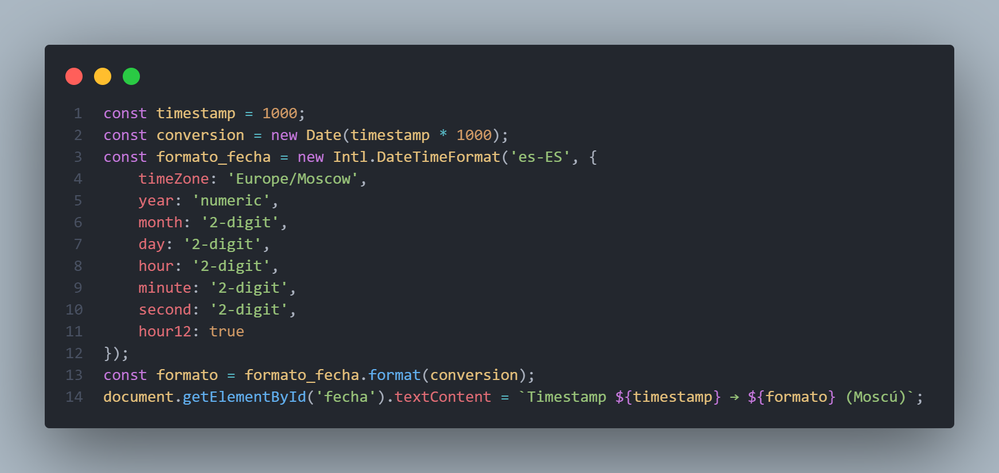
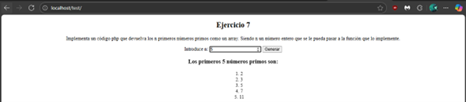
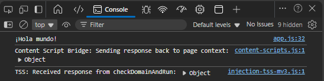

Elaborar una pequeña función en javascript que recibiendo un array con nombres devuelva otro array con otro array de la misma longitud y cuyos elementos sean la longitud de cada nombre en el mismo orden.
Array original: ['Juan', 'Camilo', 'Andrea', 'Sebastian', 'Fernanda']
Resultado:
Crear un CSS que modifique el siguiente html para que el texto aparezca centrado horizontalmente. El CSS debe estar incluido en el mismo html.
¿En qué ruta de windows 10 podemos encontrar la resolución de nombre de dominios local? ¿Y en windows 11?
C:\Windows\System32\drivers\etc\hosts
¿Cúal o cuáles de las siguientes urls provoca una encriptación de datos punto a punto entre el navegador del cliente y el servidor final?
Dar la fecha y hora exactas un timestamp igual a 1000 en la zona horaria de Moscú
El código de estado de una petición http es 418 ¿Cuál es el problema de esta petición?
Implementa un código php que devuelva los n primeros números primos como un array. Siendo n un número entero que se le pueda pasar a la función que lo implemente.
Haz un pequeño código ofuscado en javascript que saque por consola el mensaje “¡Hola mundo!” (sin las comillas)
Encuentra el password de 2 caracteres cuyo hash md5 sea 49f68a5c8493ec2c0bf489821c21fc3b
¿Una misma dirección IP en un mismo día y hora puede proceder de más de una persona?
Respuesta: Si, debido a que la IP pública es la misma en los diferentes dispositivos conetactados de una red